Assemble the illumination
Tools
Electronic Components
- 1 2 pin Du Pont connector female housing
- 1 30x30x10mm Heat sink
- 1 Double-sided self adhesive tape
- 1 Double-sided thermal tape
- 1 High-power star LED
- 2 Male Crimp Pin
Mechanical Components
Optical Components
Printed Parts
In this section, we are assembling the strobe illuminator. This mounts the high-power LED and condenser lens above the sample so the microscope can image the transmitted light.
Step 1: Mount the base
- Place the illuminator base onto the top plate in opposite orientation to the focusing actuator.
- Secure in place with three M3x10mm screws and three M3 nuts (using a 2.5mm Ball-end Allen key)
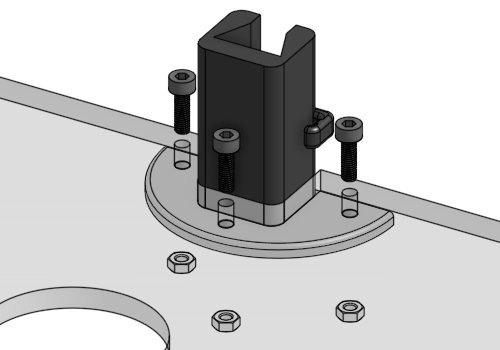
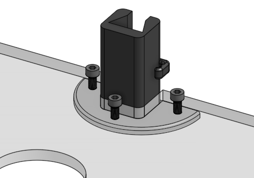

Step 2: Assemble the slider
- Positionate a heat-set insert in the round hole of the illuminator slider
- Apply heat to the insert (using a soldering iron) and use gentle force to push it into position as decribed in the guide to use heat-set inserts.
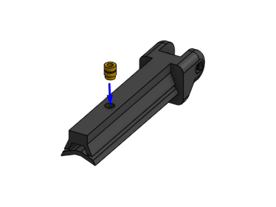


- Push a M3 nut into the slot in the illuminator thumbscrew.
- Screw a M3x20mm pozi pan head screw into the thumbscrew. Use a #1 pozidrive screwdriver.
- Screw the thumbscrew assembly into the heat-set insert in the illuminator slider.
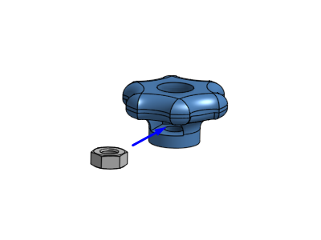
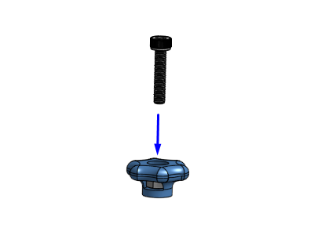
 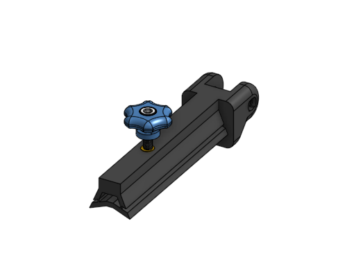
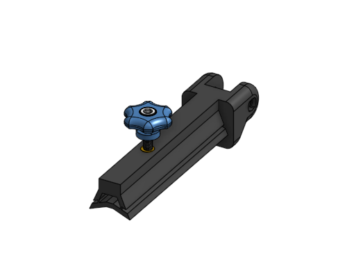
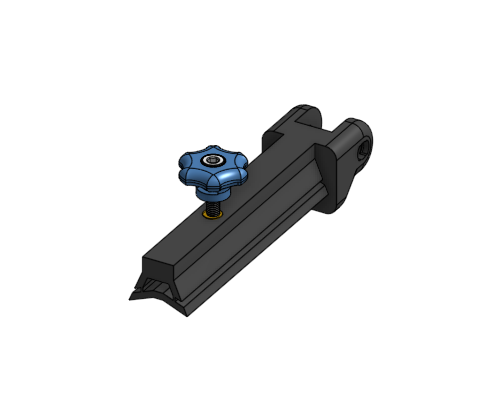
Step 3: Mount the light holder
- Put the illumination slider together with illumination arm, and align the holes.
- Use a hinge pin to connect them. Insert it into the rectagular side of the slider.
- It should take a little bit of force to push it through the holes. A needle-nose plier can be useful.
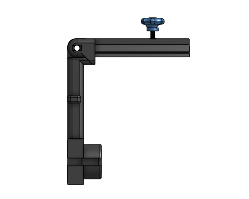


Step 4: Assemble the condenser lens, LED, and heatsink
- Fasten a high-power LED to a heat sink using a double-sided thermal tape as described in this guide.
- Fasten the assembly to a 20 mm circular lens using a double-sided self adhesive tape as described in this guide.
- This is the final assembly
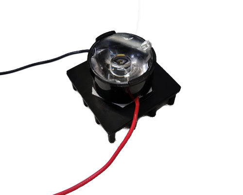
Step 5: Assemble the illumination wiring
- Take the red and black cables of the illumination assembly and crimp them using two male connectors and a crimper as described in this guide.
- Attach a 2 pin Du Pont connector female housing to it.
- This is the illumination wiring
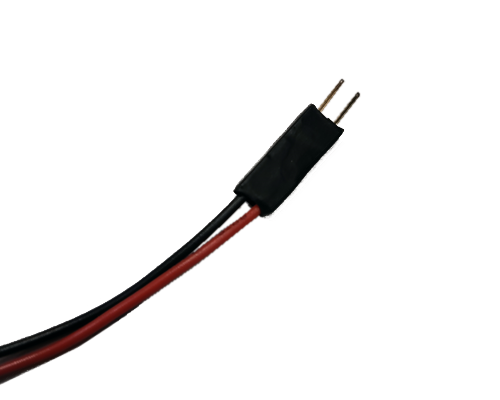
Step 6: Mount the illumination assembly
- Position the illumination assembly in the illumination arm. One side of the LED holder has a space for cables.
- Secure the assembly using a cover.There is also space for cables, use it as reference.


Step 7: Attach the illumination wiring
- Insert the illumination wiring to the cable clip next to LED holder
- Mount the illumination arm assembly to the base
- Insert the illumination wiring to the other cable clip in the base
 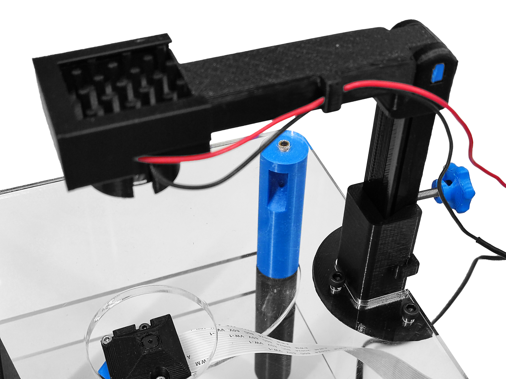
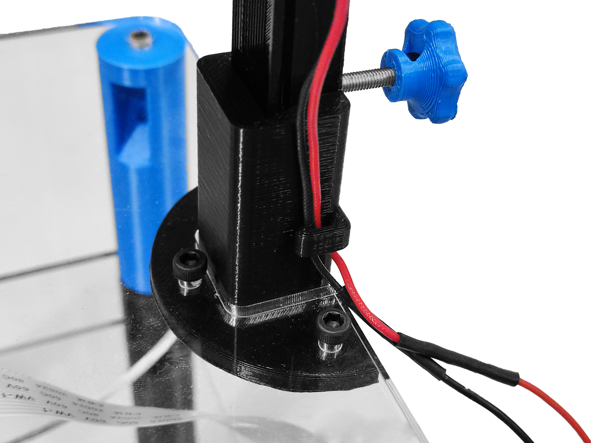
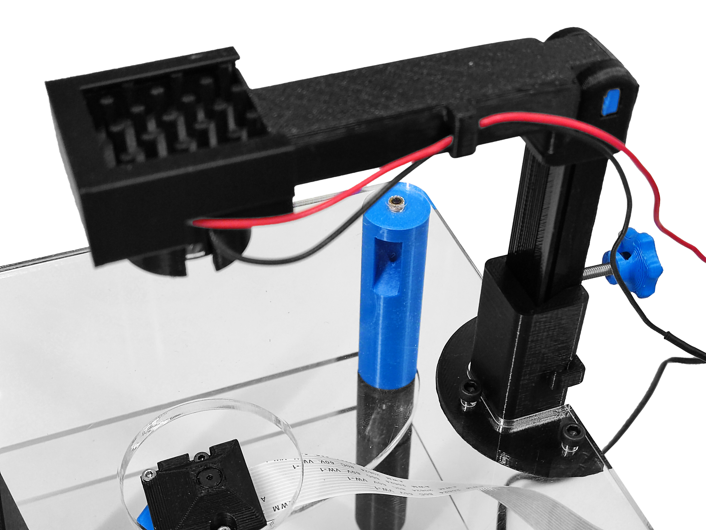
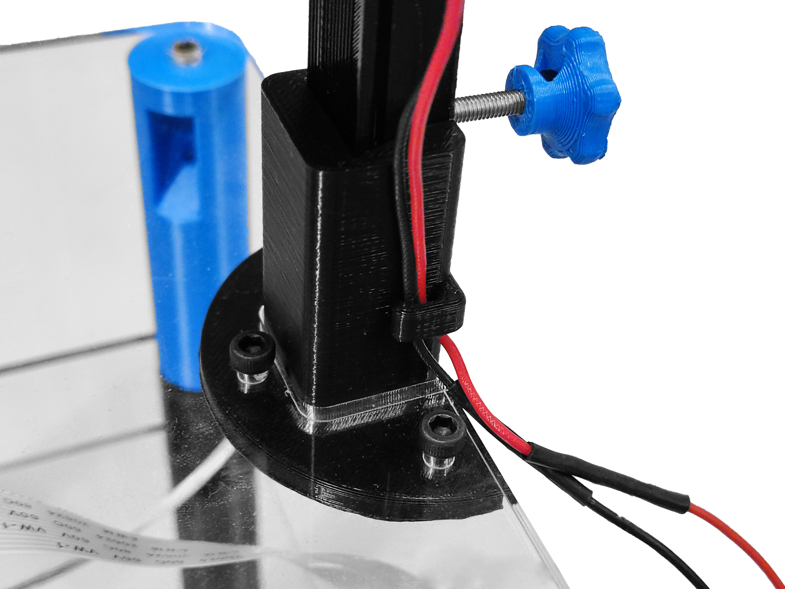

Step 8: Connect the strobe
- Connect DuPont female 2-pin connector of the strobe cable to the 2-pin male connector of the illumination wiring. Be careful to connect positive and negative terminals in wrong position.
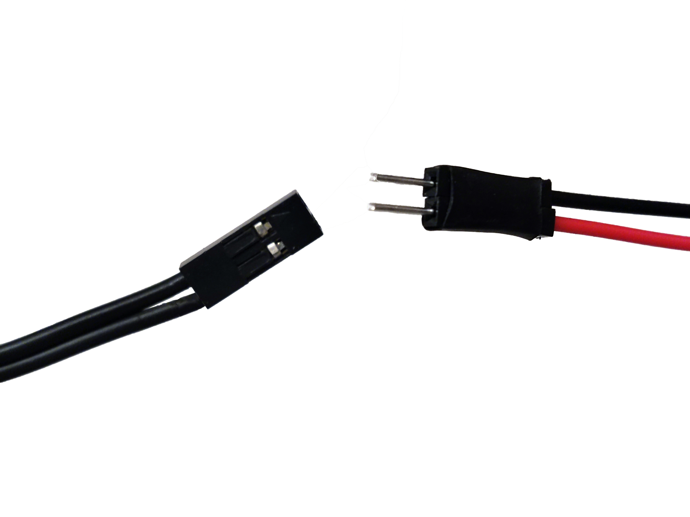